Spottie - Sportium's VIP fan Spottie - Sportium 的 VIP 粉丝 NFT 在过去 7 天内售出 1 次。Spottie - Sportium 的 VIP 粉丝的总销售额为 30.74 美元。Spottie - Sportium 的 VIP 粉丝 NFT 的平均价格为 30.7 美元。Spot
Spray Cans by Campbell La Pun ‘Spray Cans’ 是由深刻的模具艺术家 Campbell La Pun 的创世纪系列。与 Museum Refined 团队 (https://twitter.com/Museum_Refined) 展出的美术合作。他流行的 Spray Can 系列已被绘制在各种媒介上，包括 帆布、木板和街道，现在在区
Spread The Memes 过去 7 天没有售出Spread The Memes。 传播模因是 6529 模因的衍生集合 传播模因 NFT - 常见问题（FAQ） ▶ 什么是传播模因？ Spread The Memes 是一个 NFT（非同
Sprite Club - Skydrop Storm Skydrop Storm 由铸币者可以在序章中选择的 5 种不同物品组成。Sprite 所有者可以领取他们自己在冒险中为相应 Sprite 选择的物品。 或者，对于那些在二级市场上购买
Spritely - Genesis Collection 6,000 个可爱多彩的像素精灵。 12 种独特的类型。 6 个不同的领域。Spritely 支持儿童 + 艺术！ Spritely 团队已承诺在 Girls Who Code 和 American for the Arts 之间分配 20 ETH。Sp
Sprouts NFT 你准备好和我们一起成长了吗？ 🌱1,000 个 Sprouts，每个 0.005 ETH 满足 欢迎来到 Sprouts 的世界，这是 1,000 名植物朋友在以太坊网络上蓬勃发展的集合。当您购
Square Cats Club Square Cats Club 是以太坊区块链上 9999 个 Square Cats 的通缩 NFT 集合。 拥有者可以将 3 只方形猫组合成方形猫战士！ 所有者将能够在独家角色扮演体验中决定 Square Cats 的命运，在经过所
SQUARES on Chain by Atlas 阿特拉斯公司创建了一个 10x10 的足球广场游戏，供阿特拉斯公司的朋友们玩。这些广场将作为 NFT 铸造，代表您对 100 个阿特拉斯广场之一的所有权。 赢得 Atlas Squares NFT 的所
Squiggles By Damers Damers 的 Squiggles 是 2222 个有趣的 Squiggles 的链式集合 Damers NFT 的 Squiggles - 常见问题（FAQ） ▶ Damers 的 Squiggles 是什么？ Damers 的 Squiggles 是一个 NFT（不可替代令牌）集合。存储在区块链上的数字艺术品
Squinkz 过去 7 天没有出售 Squinkz。 第2222章 这是一个艺术实验。你可以用你的 squinkz 自由地做你喜欢的事！ Squinkz NFT - 常见问题（FAQ） ▶ 什么是 Squink
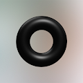 Squirl Game 3333 个 NFT 随机分布在 ETH 区块链上。 即时揭晓。 持有者越强大，社区就越强大。 游戏和不和谐的所有决定将由持有者做出。 只允许持有人。 Squirl Game 是 The Squid Game TV Series 仅有 600
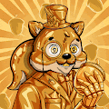 Squirrelly Squirrels Collection Official 由松鼠钱包提供支持。 10,000 只算法生成的松鼠在元宇宙中建造了一个乌托邦！ 每个 Squirrel 都是 Squirrel Wallet 产品套件中更多实用程序的关键。 一个加密爱好者社区，分享他们对
Squirrelly Squirrels Official 创建者 Squirrelly SquirrelsPRE-SALEWEBSITE | 不和谐 | TWITER10,000 只算法生成的 Squirrelly Squirrels 在元宇宙中建造了一个乌托邦！ 每个 Squirrel 都是加密爱好者社区的一把可爱的钥匙，他们分享他们对 NFT 和 DeFi 的热爱和知识
Squirreltology Squirreltology 是一种生活方式运动，松鼠是宇宙的中心，这当然是由松鼠制造的。社区钱包在第一个市场上铸造或出售的每个 NFT 都带有定制的#squirreltolo
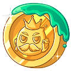 Squishiverse Items 包含所有 Squishiverse 物品的官方收藏。 FourLeafClover 的一个项目 Clover 在 NFT 领域看到了指数级的增长，因为她终于获得了应有的吸引力。这个社区将专注于寻找极具天赋的艺术家，并开
SSUGI WORLD HomePage(http://ssugi.world) “SSUGI”是跨元界和现实的元界虚拟人项目。 生活在元宇宙中的“SSUGI”最初作为 NFT 被介绍给世界，并开始了跨越元宇宙和现实世界的活动。 在
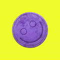 STACY STACY 是一系列独特的、手工制作的、用于区块链的设计师药丸。 到目前为止，我们已经成功举办了 SERIES I 和 SERIES II，共有 51 个独特的设计和 20 个艺术家合作。其他系
Stacy NFT 过去 7 天没有出售 Stacy NFT。Stacy 是 Metaverse 中最性感的 NFT！ 现在去薄荷Stacy！为什么薄荷： 10% 的销售额将进入社区钱包 治理代币空投做社区项目 Metaverse
Stages Of Grief - FREE MINT 过去 7 天内没有出Stages Of Grief - FREE MINT的 Good Mourning。 Stages Of Grief - FREE MINT是独立歌手/词曲作者 Ashley Strongarm 的音乐 NFT 合集。该系列包含 5 个版本
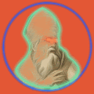 Stamps by CRWWK CRWWK 的 Memes + Art + HistoryStamps 是关于当今事件、图标和艺术的系列。 它是关于时刻、时代精神和我们所有人的。 欢迎来到指数时代！ 抓住你的座位，享受骑行。定制 ERC7
Star Dreamers I: Mei 梅是一个梦想家，他将希望和爱的能量带入宇宙。 汲取她的魔力和内在光芒。创世纪系列包含多个季节，由 AI 生成，并在 Photoshop/Procreate 中进行轻微编辑，以获得美学吸引力
Star Love by Emanuele Ferrari Emanuele Ferrari NFT 的 Star Love 在过去 7 天内售出 9 次。Emanuele Ferrari 的 Star Love 的总销售额为 4.06 万美元。Emanuele Ferrari NFT 的 Star Love 的平均价格为 450.9 美元。Emanuel
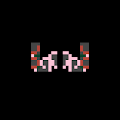 Star Ships Star Ship NFT 是 Pixelglyph P2E 游戏中的船只。 使用您的 Star Ship 开采 Element 69。Star Ship NFT 还包括生成的 3D Pixelglyph Invaders！ 具有生成视觉和音频的太空射击游戏。 船舶完全在
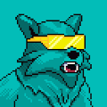 Star Wolves 最近7天没有星狼创世卖出。 参见：Star Wolvez Generative 我们要去的地方，月亮将只是一粒尘埃。 Star Wolves Genesis NFT - 常见问题（FAQ） ▶ 什么是星狼创世纪？ Star Wolves Genesis 是一个
StarChant StarChant 是由 620 个生成化身组成的受 K-pop 启发的系列。 通过收集不同的音乐表演者，从练习生到首次亮相，再到最稀有的偶像，从而提升等级。 根据 NFT 的独特特征交易您
Stardust Generation 现在在 https://mint.stardustsociety.io 铸造基于 1/1 创世纪集合“星尘协会”，星尘世代是漂浮在以太坊轨道上的 7777 位梦想家的集合。 Stardust 生态系统展示了 web3 时代的自我表达。 持有者可以通过时
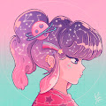 StarFaces ✨ 来自竹下街的深处：101 个独特的手工 StarFaces NFTs.Rarity: Common / Uncommon / Rare / ★WonderFace StarFaces NFT 在过去 7 天内售出 1 次。StarFaces 的总销售额为 140.69 美元。
StarFrens Official 曾经在你的作业上得到一颗星吗？ 一个 web3 品牌，致力于教育和引导青年建设者进入 web3 您可以在世界任何地方成为 Star Fren。将永远只有 999 个创世之星，每个都
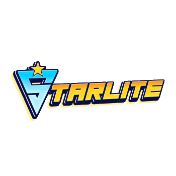 Starlite Official STARLITES 是 3238 种赤壁风格 NFT，专注于将个人聚集在一起、创建内容和提供物理世界 Starlite 官方 NFT 在过去 7 天内售出 137 次。Starlite Official 的总销售额为 1.55 万美元。
Stars That Burn (Limited Edition) 燃烧的星星（限量版）有 (33) 版我在洛杉矶港拍摄的神奇小镜头。 天空燃烧着炽热的色彩，在我的水箱顶部使用闪光灯，我能够在海浪的表面上创造出一些看起来
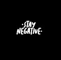 Stay Negative Stay Negative - 限量版 NFT 系列，热情和创造力融合在一起，创造了一系列想要带来积极和快乐的独特故事。过去 7 天内未售出任何“留负”。 保持消极 NFT - 常见问题 (FAQ) ▶
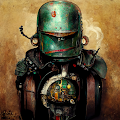 Steam Punk Space Raiders Steam Punk Space Raiders NFT - 常见问题（FAQ） ▶ 什么是蒸汽朋克太空攻略？ Steam Punk Space Raiders 是一个 NFT（非同质代币）系列。存储在区块链上的数字艺术品集合。 ▶ 存在多少个
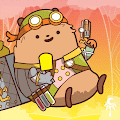 STEAMPUNK HAMSTERS NFT 欢迎来到 OpenSea 上的 STEAMPUNK HAMSTERS NFT 之家。 发现这个系列中最好的项目。 过去 7 天没有出售 STEAMPUNK HAMSTERS NFT。 蒸汽朋克仓鼠 NFT NFT - 常见问题（FAQ） ▶ 什么是蒸汽朋克仓鼠 NF
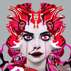 Stellabelle Matic 欢迎来到 OpenSea 上的 Stellabelle Matic 之家。 发现这个系列中最好的项目。 NFT 世界中贪婪与平庸的致命结合催生了 CryptoStellas，这是由杰出的 OG 密码艺术家 Stellabelle 于
Stellar Leopards 欢迎来到 OpenSea 上的 Stellar Leopards 之家。 发现这个系列中最好的物品。Stellar Leopards 是一个实验性的 RPG 游戏项目。 10,000 个 Genesis NFT 遵循 ERC-721 标准，在以太坊上生成。 在地球丛林深
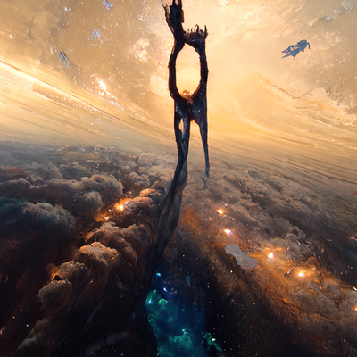 StellarAi Gen1 part 2 GEN1 Stellar AI 收集的 420 个 nfts 的第二部分，我们是这个宇宙的一部分；我们在这个宇宙中，但也许比这两个事实更重要的是，宇宙就在我们之中。”通过提供关键字和主
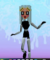 Stellas Community 这是一个社区可穿戴设备系列，这意味着任何人都可以在获得我的批准后铸造自己的加密体素可穿戴设备。 提交您的 vox 文件（必须为 32 x 32 x 32）后，请在 Twitter
StonerApeSketch StonerApeSketch 统计数据 创建于 4 个月前，270 代币供应，10% 费用 过去 7 天内没有出售 StonerApeSketch。 1717 年最流行的 NFT 收藏“StoneerAp
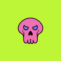 StonerCryptoClub Access Card StonerCryptoClub 访问卡统计 创建于 4 个月前，1 代币供应，5% 费用 过去 7 天内没有售出 StonerCryptoClub 访问卡。 我们即将推出的 StonerCryptoClub NFT 的终极 VIP 会员资格，拥有一张访问卡将授予您一个自
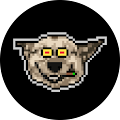 StonerDogz StonerDogz 统计数据 创建于 4 个月前，420 代币供应，10% 费用 过去 7 天没有出售 StonerDogz。 420 StonerDogz 🐕 在以太坊区块链上吸烟 没有不和谐，没有路线图，
Stoners Rock StonersRock 是在以太坊区块链上铸造的 10,420 个独特 NFT 的集合。 Rocks 让您可以进入我们独有的 Stoner Sanctuary，这是一个让志同道合的人放松、交流、探索和享受的地方
StonerTown Uhhhh.. 是 .. 7100 斯托纳？是的 7100 Stoners.. Blazin on the Blockchain.. 721a.. cc0.. Free.. MINTED OUT。想要一个呃..我太高了，无法写描述..它的嗯.. 7100 Stoners？是的，7100 个 Stoners 在区块链
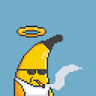 Storied Apes Bananas 推出 5,000 个 Storied Apes Pixels NFT 合集。 Storyed Apes Pixel Collection 将在解锁Storied Apes 故事的下一阶段中发挥重要作用。 在 33%、66% 和 100% 铸造后向持有者赠送 $ETH。 NFT 在 33
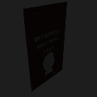 Storied Apes Breeding Pass 使用后代猿繁殖通行证，加入传奇猿通往元宇宙的道路。当该系列推出时，每张通行证都将让您获得 1 个后代猿薄荷。 第4 阶段将引入Storied Apes Vox